<!DOCTYPE HTML PUBLIC "-//W3C//DTD HTML 4.01 Transitional//EN">
<html lang="ja">
<head>
<title> gnuplot / plot (1)</title>
<!-- Generated 1999/ 7/21 -->
<!-- $Id: plot1.html,v 1.11 2004/12/19 09:23:44 kawano Exp $ -->
<meta http-equiv="content-type" content="text/html;charset=iso-2022-jp">
<link rel="stylesheet" href="style-new.css" type="text/css">
</head>
<body>

<table width="100%" border="0" cellpadding="0" cellspacing="0">
<tr><td bgcolor="#cccc90" width="320">
    <div align="left">
    <a href="index.html">
    
    </a></div></td>
    <td bgcolor="#cccc90">
      <div align="center"><h3> - not so Frequently Asked Questions - </h3> </div>
      <div class="update"> update 2004/9/5 </div>
    </td>
</tr>
<tr><td bgcolor="#fae8ba"></td>
    <td bgcolor="#fae8ba"><div class="navi"> 
<a href="index.html">           HOME </a> |
<a href="intro/index.html">     INTRODUCTION </a> |
<a href="general.html">         INFORMATION </a> |
<a href="gallery/index.html">   GALLERY </a> |
<a href="plot1-e.html">         ENGLISH </a>
</div></td></tr>
</table>
<hr class="topsep">


<table width="100%" border="0" cellpadding="0" cellspacing="0">
<tr><td id="menu">
 <p> not so FAQ</p>
  <ul>
    <li><a href="legend.html">      $BK^Nc(B(Legend) </a>
    <li><a href="tics.html">        $BL\@9(B(Tics) </a>
    <li><a href="label.html">       $B%i%Y%k(B(Label) </a>
    <li><a href="plot1.html">       2$B<!85%W%m%C%H(B </a>
    <ul>
      <li><a href="plot1.html#5.1">
           $B0lDj$NBg$-$5(B </a>
      <li><a href="plot1.html#5.2">
           $B:81&N>J}$N(BY$B<4(B </a>
      <li><a href="plot1.html#5.3">
           $B<4$r>C$9(B </a>
      <li><a href="plot1.html#5.4">
           $B=D2#Hf$N8GDj$5$l$??^(B </a>
      <li><a href="plot2.html#5.5">
           $B%<%m<4(B </a>
      <li><a href="plot2.html#5.6">
           $B8m:9K@$N2#@~(B </a>
      <li><a href="plot2.html#5.7">
           $BJ8;z$rBg$-$/(B</a>
      <li><a href="plot2.html#5.8">
           $B6J@~$GJd4V(B</a>
      <li><a href="plot2.html#5.9">
           $BOH@~>e%G!<%?E@$r>C$9(B </a>
      <li><a href="plot3.html#5.10">
           $BJ#?t$N%0%i%U(B </a>
      <li><a href="plot3.html#5.11">
           $B3J;R(B </a>
      <li><a href="plot4.html#5.12">
           $BJ#?t$N<4(B </a>
      <li><a href="plot4.html#5.13">
           $BG$0U$N3J;R(B </a>
      <li><a href="plot5.html#5.14">
           $B?^Cf$N?^(B </a>
      <li><a href="plot5.html#5.15">
           $BK@%0%i%U(B </a>
      <li><a href="plot6.html#5.16">
           2$B$D$N?^$rJB$Y$k!%(B</a>
      <li><a href="plot7.html#5.17">
           $B@55,3NN(<4(B </a>
      <li><a href="plot7.html#5.18">
           $B%G!<%?CM$r0u:~(B </a>
    </ul>
    <li><a href="plot3d.html">      3$B<!85%W%m%C%H(B </a>
    <li><a href="polar.html">       $B6K:BI8%W%m%C%H(B </a>
    <li><a href="parametric.html">  $BG^2pJQ?tI=<((B </a>
    <li><a href="datafile.html">    $B%G!<%?%U%!%$%k$N?tCM(B </a>
    <li><a href="postproc.html">    $B?^$rIA$$$?$=$N8e$O(B</a>
    <li><a href="misc1.html">       $B$=$NB>(B </a>
  </ul>
 <br>
</td>


<td id="content">


<h1><a name="top"> 2$B<!85%W%m%C%H$N$"$l$3$l(B ($B$=$N(B1)</a></h1>

<div align="center">
<a href="plot1.html"> 1 </a> | 
<a href="plot2.html"> 2 </a> | 
<a href="plot3.html"> 3 </a> | 
<a href="plot4.html"> 4 </a> | 
<a href="plot5.html"> 5 </a> | 
<a href="plot6.html"> 6 </a> | 
<a href="plot7.html"> 7 </a>
</div>

<h2><a name="5.1">$B?^$NBg$-$5$,$$$D$b0lDj$K$J$k$h$&$K$7$?$$!%(B</a></h2>

<p>gnuplot$B$,IA$/%0%i%U$NNN0h$O!$<4$N?t;z$d%i%Y%k$K$h$C$FJQ2=$7$^$9!%(B
$B$3$NNN0h$r8GDj$7$?$$$H$-$O!$(B<tt>margin</tt>$B$rD4@0$7$^$9!%(Bmargin$B$K$O!$(B
$B>e(B(tmargin)$B2<(B(bmargin)$B:8(B(lmargin)$B1&(B(rmargin)$B$,$"$j!$%G%U%)%k%H$G$O(B
$BA4$F$,<+F07W;;$5$l$k$h$&$K$J$C$F$$$^$9!%8=:_$N@_Dj$O!$(B</p>
<pre class="sample">
gnuplot&gt; show margin

        lmargin is computed automatically
        bmargin is computed automatically
        rmargin is computed automatically
        tmargin is computed automatically
</pre>
<p>$B$G8+$k$3$H$,$G$-$^$9!%(Bmargin$B$KM?$($k?tCM$O!$J8;z?t$G$9!%(B</p>

<p>$BNc$H$7$FA4$F$N(Bmargin$B$r;XDj$7$?>l9g$r<($7$^$9!%(B</p>
<pre class="sample">
gnuplot&gt; set lmargin 10
gnuplot&gt; set bmargin 3
gnuplot&gt; set rmargin 2
gnuplot&gt; set tmargin 1
</pre>
<p>$B$3$NMM$K$7$F$*$$$F!$(BX$B!$(BY$B<4$NL\@9$N%U%)!<%^%C%H$rJQ$($F$_$^$9!%(B</p>
<div align="center">
  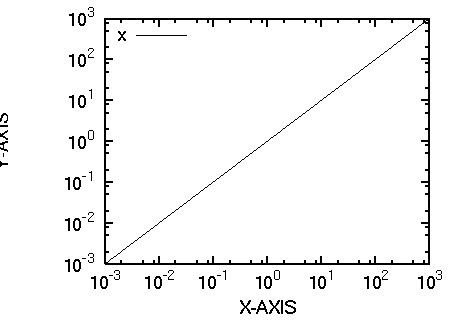
  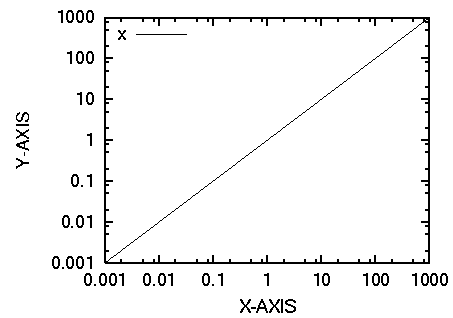
</div>
<p>$B<4$N%i%Y%k$N0LCV$OJQ$o$C$F$7$^$$$^$7$?$,!$%0%i%U$NOH$NBg$-$5$O(B
$BF1$8$^$^$G$9!%%i%Y%k$N0LCV$b8GDj$9$k$K$O!$(B<tt>set {x|y}label</tt>
$B$K$"$k%*%U%;%C%H$N%*%W%7%g%s$r;XDj$9$kI,MW$,$"$j$^$9!%(B</p>


<div class="top"><a href="plot1.html#top"></a></div>
<h2><a name="5.2">$B:81&N>J}$N(BY$B<4$r;H$$$?$$!%(B</a></h2>

<p>$BJ#?t$N?^$r0l$D$K$^$H$a$FIA$-$?$$$H$-$,NI$/$"$j$^$9!%(Bgnuplot$B$G$O>e2<(B
$B:81&$N<4$KJL!9$NL\@9$r3d$j?6$k$3$H$,$G$-!$1&B&$N(BY$B<4$O(BY2$B<4!$>e$N(BX$B<4$O(BX2
$B<4$H$7$F;H$&$3$H$,$G$-$^$9!%(B</p>

<p>Y2$B<4$O!$2?$b$7$J$1$l$P:8B&$N(BY$B<4$HF1$8$G$9!%(BY2$B$N%l%s%8$r(BY$B$H0c$&$h$&$K(B
$B$7$F$_$F!$(Bsin(x)$B$H(Bsin(x)$B$N(B2$B>h$r%W%m%C%H$7$F$_$^$7$g$&!%$I$A$i$N(BY$B<4$r;H$C$F(B
$B?^$r%9%1!<%k$9$k$N$+$O!$(B<tt>plot</tt>$B$N%*%W%7%g%s$K$"$k(B<tt>axis</tt>$B$G;XDj$7$^$9!%(B
axis$B$KB3$1$F(Bx1y1, x1y2, x2y1, x2y2 $B$N$$$E$l$+$rM?$($F!$I=<($9$k$H$-$K;H$&(B
$B<4$r7h$a$^$9!%(Bx1y2$B$J$i!$2<B&$N(BX$B<4$H1&B&$N(BY$B<4$NL\@9$K9g$o$;$FI=<($9$k$3$H$K(B
$B$J$j$^$9!%(B</p>

<pre class="sample">
gnuplot&gt; set xrange [0:2*pi] 
gnuplot&gt; set yrange [-1:1] 
gnuplot&gt; set y2range [0:1]  
gnuplot&gt; plot sin(x)    axis x1y1, \
              sin(x)**2 axis x1y2 
</pre>
<div align="center">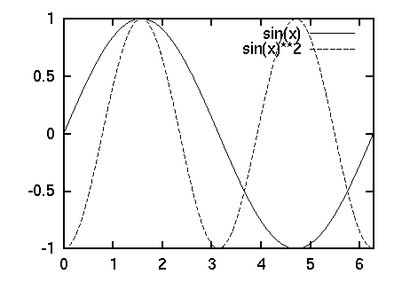</div>

<p> $B$3$N$^$^$G$O!$1&$N<4$KIA$+$l$kL\@9$O!$:8$N<4$HF1$8$^$^$G$9!%(B0$B!A(B1$B$N(B
$BHO0O$K9g$o$;$?L\@9$r=PNO$7!$$5$i$K!$:8$N(BY1$B<4$NL\@9$r1&B&$KIA$+$J$$$h$&(B
$B$K$9$k$K$O!$<!$N$h$&$K(Bnomirror$B$r;XDj$7$^$9!%L^O@!$(B
<tt> set y2tics 0,0.1</tt>$B$NMM$K(BY2$B<4$N:G>.L\@9$HA}J,$r;XDj$9$k$3$H(B
$B$b$G$-$^$9!%(B</p>

<pre class="sample">
gnuplot&gt; set y2tics 0, 0.2
gnuplot&gt; set ytics nomirror
</pre>
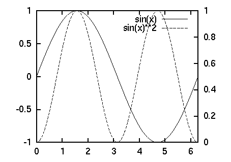
<p>$B$3$N$h$&$K$7$F%W%m%C%H$7$??^$G$O!$$I$N@~$r1&$N<4$GFI$`$N$+$r$O$C$-$j$H(B
$B$5$;$kI,MW$,$"$j$^$9!%$=$N$H$-$O!$(B<tt>set arrow </tt>
$B$r;H$C$F1&8~$-$H:88~$-$N(B<a href="label2.html#4.5">$BLp0u$r?^$KIA$-9~$a$P$h$$$G$7$g$&!%(B</a></p>

<br clear="all">


<div class="top"><a href="plot1.html#top"></a></div>
<h2><a name="5.3">$B<4$r>C$7$?$$!%(B</a></h2>

<p> gnuplot$B$O>e2<:81&$KOH$r:n$C$F!$$=$NCf$K?^$r%W%m%C%H$7$^$9$,!$$3$N(B
$BOH$rI=<($7$?$j>C$7$?$j$9$k$K$O!$(B<tt>set border</tt>
$B$r;H$$$^$9!%>e2<:81&$N<4$K$O!$(B1($B2<(B)$B!$(B2($B:8(B)$B!$(B4($B>e(B)$B!$(B8($B1&(B)$B$N?tCM$,M?$($i$l$F$*$j!$(B
$BFCDj$N<4$rI=<($7$?$$;~$O!$$=$N<4$N?t;z$r2C$($?$b$N$rM?$($^$9!%(B1$B$J$i(BX1$B<4$@$1!$(B
3$B$J$i(BX1$B$H(BY1$B<4!$(B31$B$J$iA4It$K$J$j$^$9!%C"$7!$$3$N?t;z$rJQ$($?$@$1$G$O!$(B
$BL\@9$@$1$,;D$C$F$7$^$$!$<4$r40A4$K>C$9$3$H$O$G$-$^$;$s!%(B
<tt>set no{x|y}tics</tt>$B$d(B<tt>set {x|y}tics nomirror</tt>$B$J$I$G!$(B
$BL\@9$rI=<($5$;$J$$$h$&$K$9$kI,MW$,$"$j$^$9!%(B
$B0J2<$NNc$O(BX1Y1$B<4$@$1$r;H$C$FI=<($9$k$b$N$G$9!%(B</p>
<pre class="sample">
gnuplot&gt; set border 3
gnuplot&gt; set xtics nomirror
gnuplot&gt; set ytics nomirror
</pre>
<div align="center">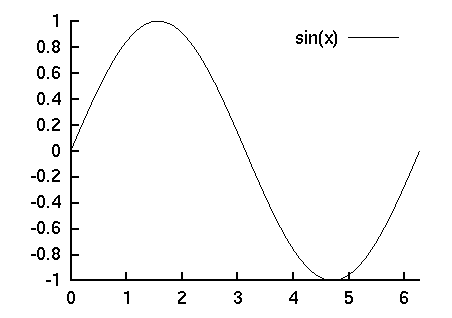</div>


<div class="top"><a href="plot1.html#top"></a></div>
<h2><a name="5.4">$B@5J}7A$d!$=D2#Hf$N8GDj$5$l$?D9J}7A$N?^$rIA$-$?$$!%(B</a></h2>

<p>$B@N$N(Bgnuplot$B$G$OIT2DG=$N0l$D$H$7$FM-L>$G$7$?$,!$:#$G$O%5%]!<%H$5$l$F(B
$B$$$^$9!%?^$r@5J}7A$K$9$k$K$O!$(B<tt>set size </tt>$B$G(B<tt>square</tt>$B$r;XDj$7$^$9!%(B</p>

<pre class="sample">
gnuplot&gt; set size square
</pre>

<p>$BF1MM$K!$=D2#Hf$r8GDj$9$k$K$O!$<!$N$h$&$K$7$^$9!%(B</p>

<pre class="sample">
gnuplot&gt; set size ratio 2
</pre>

<p> $B$3$N>l9g!$(BY$B<4$,(BX$B<4$N(B2$BG\$K$J$j$^$9!%(Bsqure$B$d(Bratio$B$G;XDj$9$k<4$ND9$5(B
$BHf$O!$<4$N?tCM(B($B$D$^$j(BX,Y$B$N%l%s%8(B)$B$K$O4X78$7$^$;$s!%(BX,Y$B<4$NC10L$KBP$7$F(B
$B$=$NHf$r8GDj$9$k$K$O!$(Bratio$B$N?tCM$rIi$K$7$^$9!%(B-1$B$K$9$k$H!$(BX$B<4$NC10LD9(B
$B$5$H(BY$B<4$NC10LD9$5$,Ey$7$/$J$j$^$9!%(B-2$B$J$i!$(BY$B<4$O(B2$BG\$ND9$5$K$J$j$^$9!%(B</p>


<div align="center"><table border="0">
<tr><td>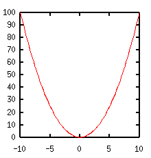</td></tr>
<tr><td align="center"> square </td></tr>
</table></div>


<div align="center"><table border="0">
<tr><td>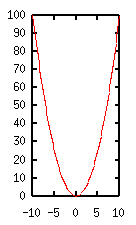</td>
    <td>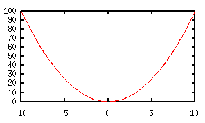</td></tr>
<tr><td align="center"> ratio 2 </td>
    <td align="center"> ratio 0.5 </td>
</table></div>


<div align="center"><table border="0">
<tr><td>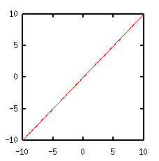</td>
    <td>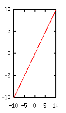</td>
    <td>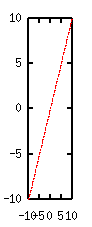</td></tr>
<tr><td align="center"> ratio -1 </td>
    <td align="center"> ratio -2 </td>
    <td align="center"> ratio -4 </td>
</table></div>

<div class="top"><a href="plot1.html#top"></a></div>

</td></tr></table>
<hr class="topsep">


</body>
</html>

